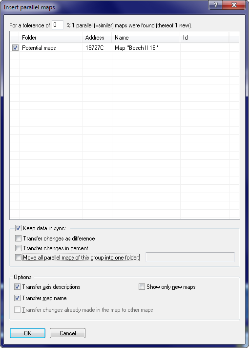

|
The dialog Parallel maps |

  
|
|
The dialog Parallel maps |
|

u Video |
Often the same map exists several times (with minor variations) in the same ECU. In WinOLS these are called "Parallel maps". You may create all of them in one go and transfer the changes automatically to the other (parallel) maps. Use the following procedure:
1. Search the map in the hexdump window and register it as map within WinOLS.
2. Enter axis descriptions if you want.
3. Click with the right mouse button into the map and select "Parallel maps".
The dialog shown above will appear. Depending on the tolerance that is entered, a different number of maps will probably be found. (The default tolerance value is calculated in such a way that a least one similar maps is found, but never over 100%.)
Use the options to configure which things you want to transfer (this applies only to the map and axis names) or which you want to synchronize (this applies only to map values). If you transfer changes as difference, not the absolute values, but the difference between original and version will be transferred.
It is recommended to create a folder for every group of parallel maps and store the maps there. This makes it easier to understand which maps get synchronized. Or you can make all maps except the current one invisible. (Right-click the map list sidebar to make all visible.)
Synchronization notes:
This function creates "Sync-Blocks", which you may view in the checksum dialog (Key F2). For these blocks WinOLS always tries to keep each two data blocks identical. If you change anything in one block, the changes will be performed in the other one, too (With a confirmation request fort he first time).
Tips:
| · | In the map list sidebar, you can activate a column that shows the number of the sync group (right click on the table header). This column has its own context menu. For example, you can select some maps and add them to a group or create a new group. |
| · | In the map list sidebar, you can search for the group id. E.g.: #2 |
| · | In the open map window you can use the hotkey Ctrl+Left / Ctrl+Right to switch between the maps of this group. |
Shortcuts
| Symbol bar: | - |
| Keyboard: | Ctrl+Alt+P |